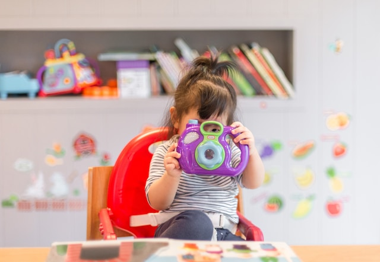

Elementary
The Kinderhouse Montessori Elementary program is for children ages 6 through 12 (1st through 6th grades) and offers an unparalleled opportunity for the ongoing development of children who have been in the Primary program. These imaginative, social, creative children are entering a new period in their lives and need a planned environment and expansive course of study to support their burgeoning independence and potential.
The Montessori Elementary program is designed to meet the needs of children in this phase of development. This experience will shape not only their knowledge and skills, but also their attitudes about learning for the rest of their lives.
Every afternoon during the 2-hour Work cycle, a Spanish Montessori teacher joins our Lead teacher. She presents in Spanish lessons that previously studied in English. We have a full-bilingual approach: We do not teach Spanish as a foreign language; we teach in Spanish!
Our Elementary Program also integrates weekly STEM and Music classes.

Primary
The Primary program is designed for children as young as 3 years through kindergarten (age 6). In order to be enrolled in the Primary program, the child must be fully toilet-trained.
There exists a very important social aspect in the Primary Montessori community which exists largely because of the mixed age group and the emphasis on respect, responsibility, and community. Because the learning is individualized, your child can work at his or her own pace while participating in a mixed-age classroom environment. Younger children learn from the activities of the older children and benefit from example, while older children gain the self-confidence that comes with responsibility and leadership.

Toddler
Kinderhouse Montessori School accepts children between the ages of 18 to 36 months for the Toddler program.
In our toddler program, growing independence is recognized as the children are helped to make individual work choices, offered purposeful and developmentally appropriate activities, and the toddler’s desire to “do it myself” is respected and encouraged.
Practical life skills, including toileting, are learned in a peaceful and home-like setting. An AMI-trained teacher directs children through the Montessori toddler curriculum where their motor coordination, independence, and language are cultivated. In this respectful and nurturing environment, the very young child experiences his early exploration into the world. The sense of community is further developed with a group snack during which an assortment of fresh fruits and vegetables are prepared and served by the children each day.
When the child reaches at least 36 months in age, and demonstrates readiness in terms of toilet training and developmental readiness, he or she will begin the transition to the Primary environment.